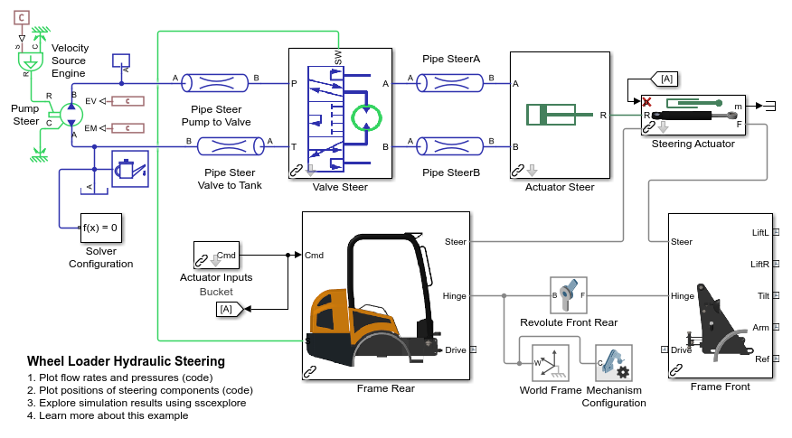
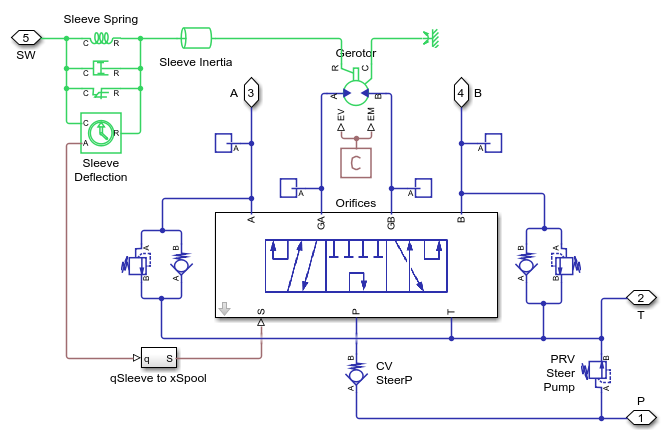
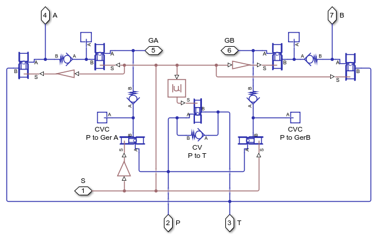
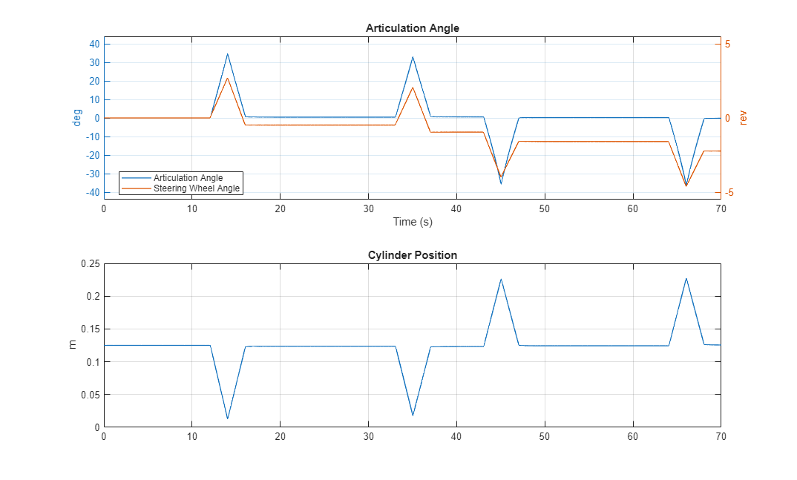
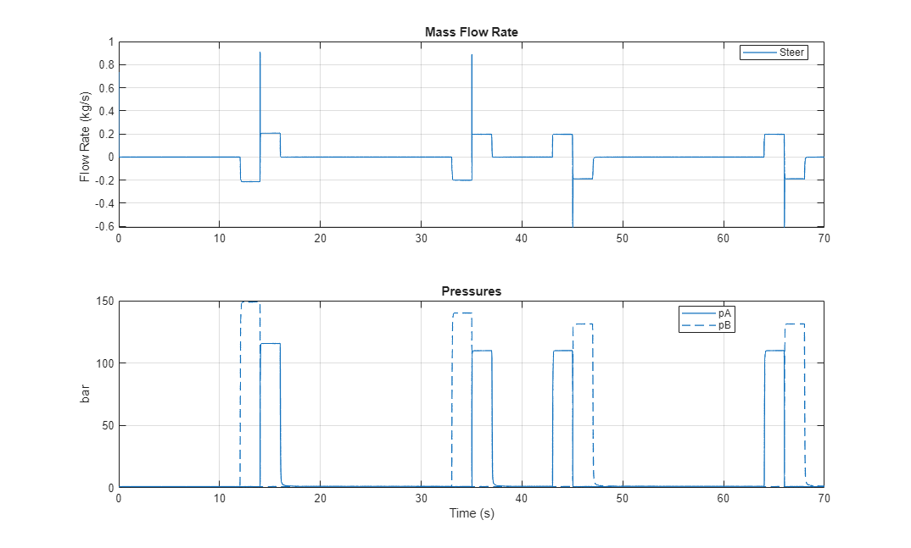

Wheel Loader Hydraulic Steering

(return to Wheel Loader Design with Simscape Overview)
This example models a wheel loader steering system with hydraulic actuation.
Contents
Model
This example models a wheel loader steering system. The chassis rear is fixed in place. As the steering wheel is turned, the orbital valve (steering valve) in the hydraulic system directs flow to the steering actuator to articulate the chassis.
Valve Steer Subsystem
The steering valve contains a directional valve and a metering device (gerotor). As the steering wheel is turned, the difference in angle between the steering wheel and and the gerotor will open orifices in the directional valve. Fluid will flow from the pressure source through the gerotor to the steering cylinder, which articulates the vehicle. When the steering wheel stops turning, the gerotor will rotate until it reaches the position where the orifices are closed.
This valve lets the steering wheel position specify the steering cylinder position. This is different than other valves in the hydraulic system where the spool position is set by the input.
Valve Steer Orifices Subsystem
This subsystem models the directional valve within the steering valve. It is modeled as a custom subsystem using orifices and check valve blocks.
Simulation Results: Y Cycle
The plots below show the simulation results of a Y cycle test. The steering system is steered twice to the left during the first half of the test, and then twice to the right during the second half of the test.
Note that in the first plot, the articulation angle returns to zero even though the steering wheel final angle is non-zero. This is because the connection between the steering wheel and steering cylinder is purely hydraulic and we are using a single-sided cylinder. It takes less fluid to turn in one direction than the other as the cylinder chambers have different volumes.
 